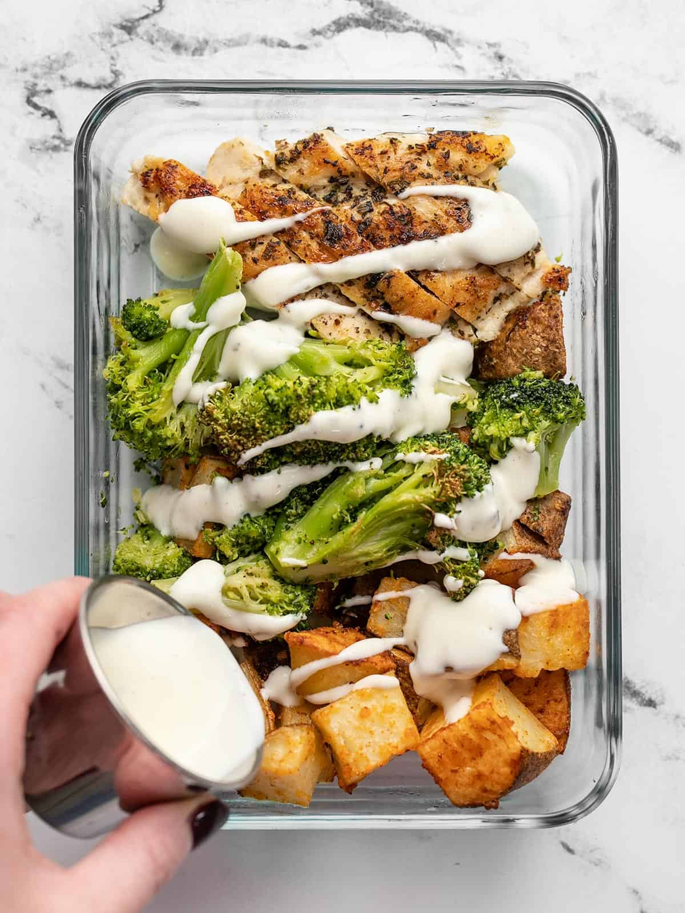

Ranch Chicken Prep Meal

Description
Winners have chicken dinners, so why not prep a chicken meal for lunch? It's affordable, delicious, and nutritious. If you're in need of creating a prep meal for 3-5 days, look no further and wring that chicken's neck.
Ingredients
- 2 lbs. russet potatoes
- 1/3 cup grated Parmesan
- 1/2 tsp garlic powder
- 1/4 tsp paprika
- 3 tbsp cooking oil, divided
- 1/2 tsp salt,divided
- 1/4 tsp pepper
- 1 lb. broccoli florets
- 1 lb. boneless, skinless chicken breast
- 1 tbsp garlic herb seasoning
Steps
- Preheat the oven to 400F. Clean and dice the potatoes into 3/4" pieces
- In a small bowl, combine the Parmesan, garlic powder, paprika, and ¼ tsp salt. Place the diced potatoes in a bowl, drizzle with 1 Tbsp cooking oil and the seasoned Parmesan, then toss until evenly coated.
- Spread the potatoes out over a parchment-lined baking sheet then transfer to the oven. Roast for 30 minutes, or until golden brown and crispy, stirring once halfway through.
- Place the broccoli florets in a bowl and drizzle with 1 Tbsp cooking, and add a ¼ tsp salt and pepper. Toss until the broccoli is evenly coated.
- Spread the broccoli out onto a parchment-lined baking sheet and roast in the preheated oven for about 20 minutes, or until browned on the edges, stirring once halfway through.
- While the vegetables are roasting, prepare the chicken. Fillet the chicken breast into two thinner pieces to help them cook faster and more evenly. Season both sides of the chicken with garlic herb seasoning.
- Heat a large skillet over medium. Once hot, add 1 Tbsp cooking oil and swirl to coat the surface. Add the chicken breasts and cook for about 5-6 minutes on each side or until well browned and cooked through.
- Remove the chicken to a cutting board and let rest for five minutes. Sliced the chicken breast into strips.
- Divide the roasted potatoes, broccoli, and sliced chicken between four meal prep containers. Fill four small dressing containers with 2 Tbsp ranch dressing each. Refrigerate the meal preps until ready to eat!